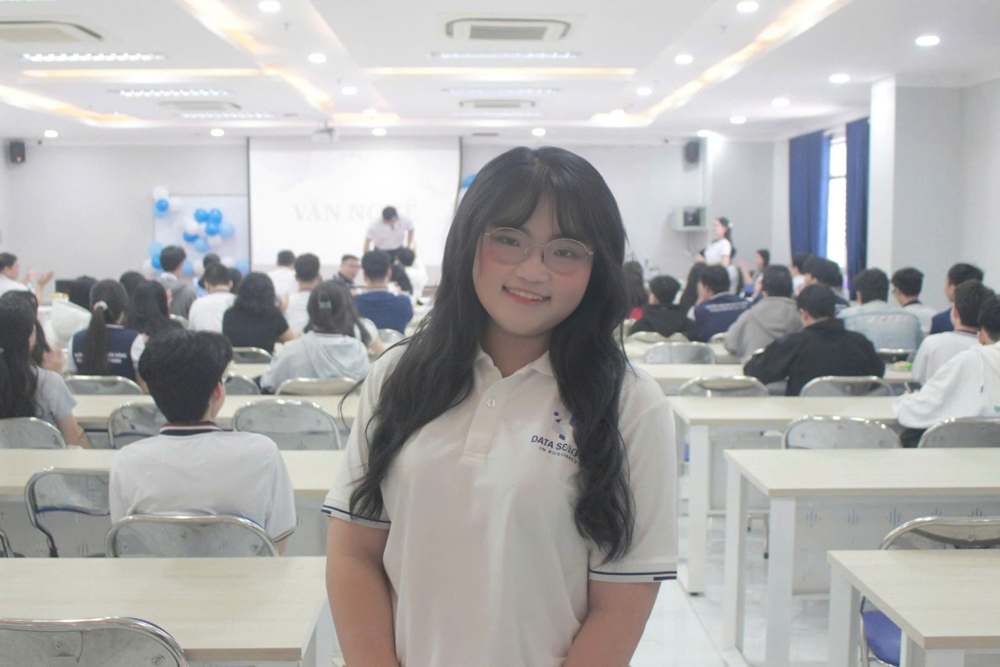

Business Data Science & Analytics
Nguyễn Thái Thanh Vân
Final-year Business Data Science student at HUB. Bridging commercial business requirements with technical rigor: data pipeline optimization (Polars, SQL, Kimball Star Schema), advanced customer segmentation (RFM, Churn Modeling), and executive Decision Support Systems (Power BI, Streamlit).

Nguyễn Thái Thanh Vân
Business Data Science Practitioner